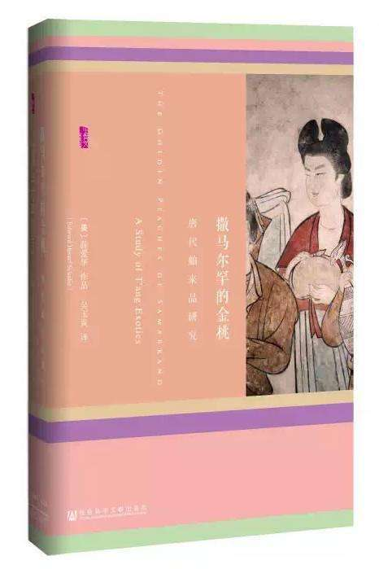
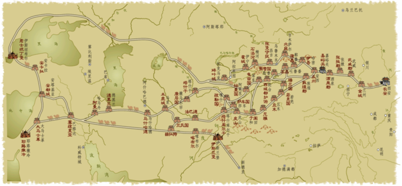

前言
我一直认为，孤僻是上帝给予一些人的财富，这是我坚持着自己的小世界拒不妥协的最大力量源泉。但来自孤僻的馈赠并不能改变我需要救赎的窘迫，所以我又需要在孤僻中靠着自己的力量去寻找未来的终点。何为终点？孔子说：“未知生，焉知死？”是故人的终点不可知，但圣人亦云：“吾十五而志于学”，可见人之于世，有志有向是比知道终点更为重要的事。离开深圳开始前行前我已25岁，却是一个有志无向的青年，只感觉人生有数道不甚清晰的路在眼前铺展，而在朦胧无形的远方隐约有一点亮光标记着一个高峰，后方则是沉寂幽森的深渊。不知道哪条路才是正确的通往光明的坦途，唯一可知的是自己绝不愿回头，于是只能抱着一个似对非对的信念前进——迈出第一步，总会知道第二步的落脚点。
于是，就这样走到了撒马尔罕。
为什么是撒马尔罕
《旧唐书》有载：“贞观）十一年，（康国）又献金桃、银桃，诏令植之于苑囿。”
康国即是唐代中亚河中地区最强大的粟特国家撒马尔罕的中文名字。时过境迁，昔日远道而来的金桃、银桃究竟是何异果已无可考证，但其在史书上留下的神秘记录却时常为人所遐想。二十世纪美国汉学家薛爱华的一部关于唐代舶来品研究轰动史学界，而书名正是取自这段文字，命名为“撒马尔罕的金桃”。而这部书恰好在某个机缘时刻被在图书馆闲阅的我拾到，偶然激起我的灵感。
撒马尔罕不仅因其金桃而闻名，它与中国的联系更因为它在丝路上起到一个标杆的作用而为史学家所重视。这是大多数中国人出没于西方世界的一个临界点，在丝路的这一头，中国的丝绸随着中国的行商和军队的往来一路辗转向前传递，在丝路的另一头，粟特人、波斯人和阿拉伯人则接过贸易的接力棒，继续把东方的珍奇送往更西边的国度。因此，撒马尔罕是古代中国不可逾越的一个终点，是中华文明可以辐射的最远边界。既然我要从历史上找一个和自己很像的古代人物作为影子，那我何不如反其道而行之，我在中国，他在中亚的撒马尔罕，我从中国前往撒马尔罕作为旅途的终点，他用一生从撒马尔罕到中国作为人生的终点？
同时，我又看到西域史大家荣新江教授一篇《粟特人的中国梦》文章甚为有感，便有以唐代撒马尔罕粟特人为背景写一部关于安史之乱背景小说的打算。一千三百年前，一位来自撒马尔罕的粟特人独自从撒马尔罕前往长安、洛阳，一千三百年后，一个中国人独自从洛阳走到撒马尔罕。同一条丝路，不一样的方向，同样的终点。